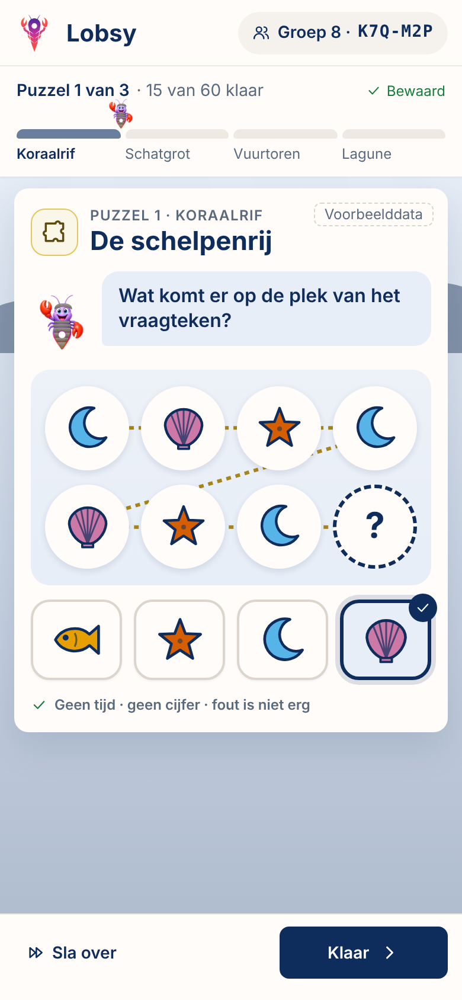
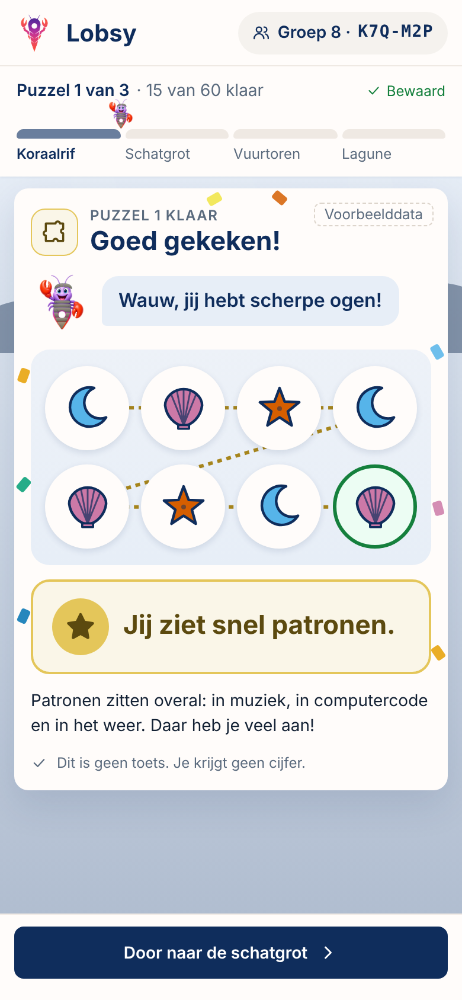
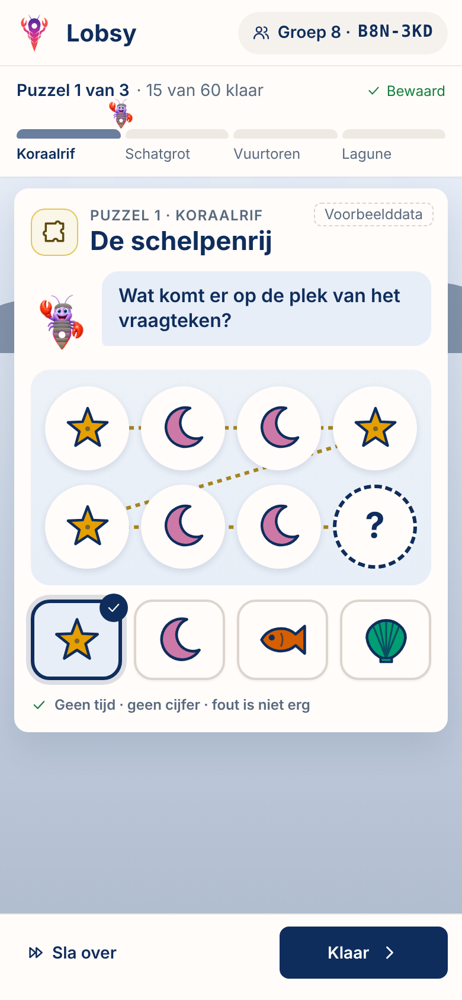
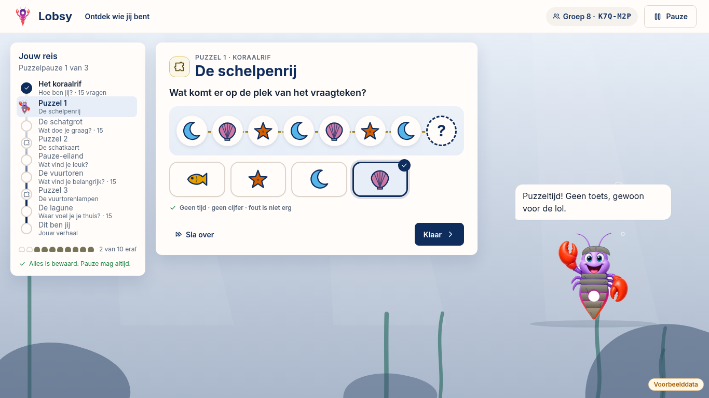
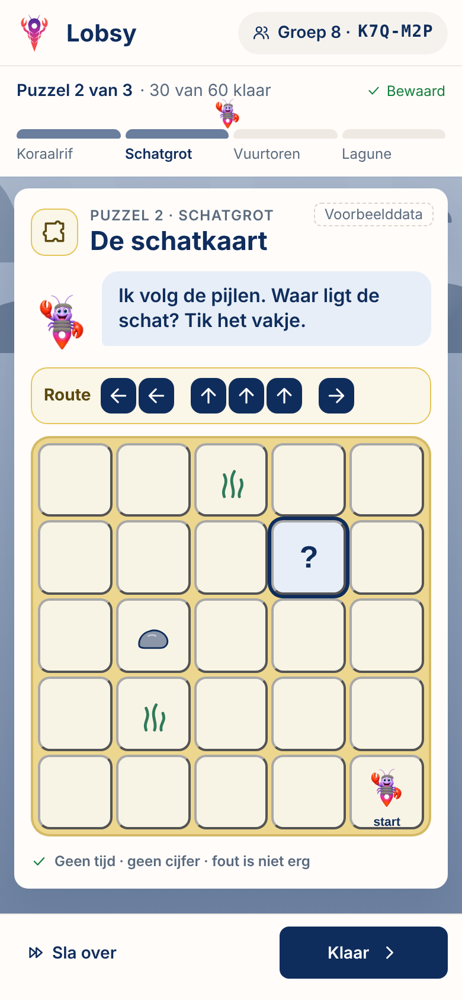
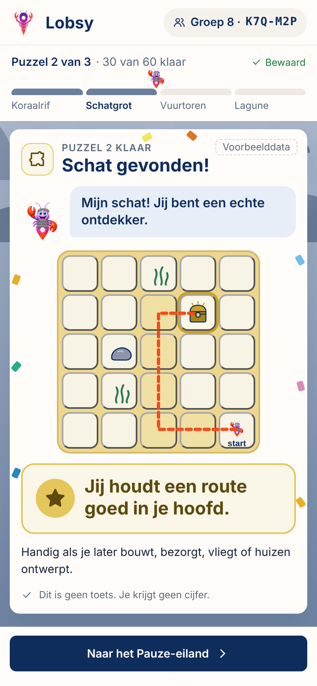
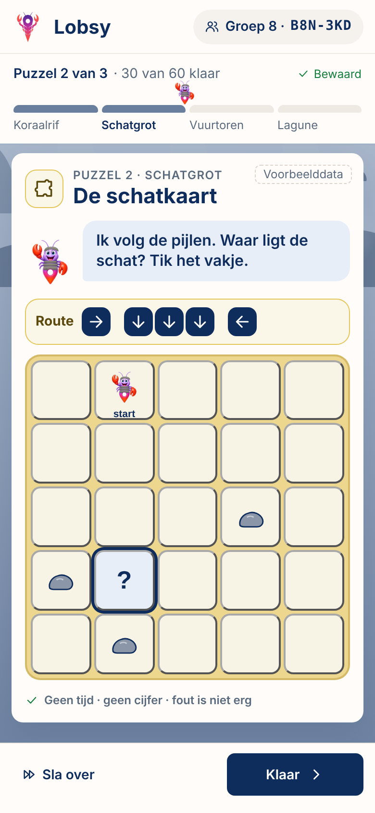
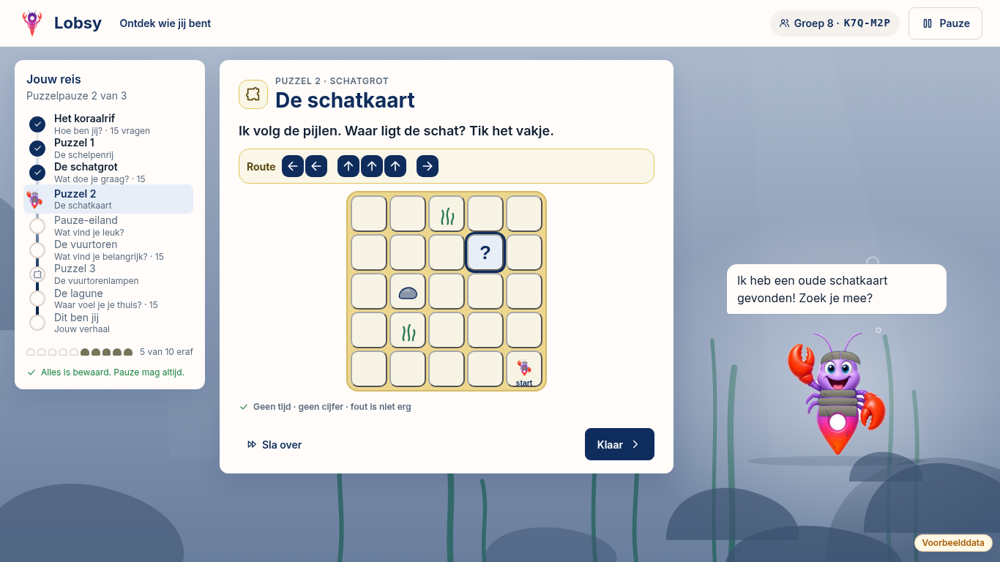
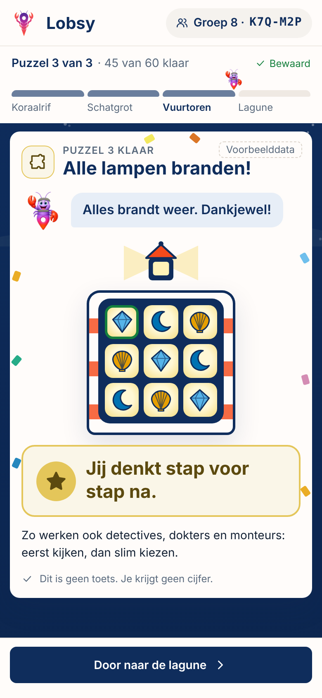
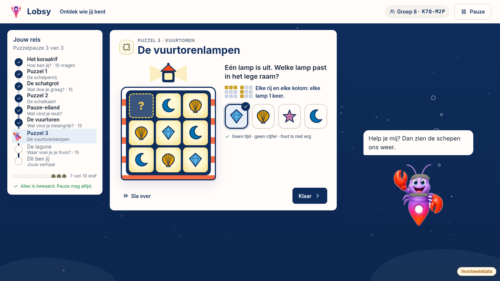

Lobsy ontdekkingsreis groep 7/8 — 3 puzzelpauzes
Na vraag 15, 30 en 45 een visuele puzzel als speelse pauze. Geen toets: geen score, geen timer, fout is niet erg, uitkomst is een sterkte-zin. Nooit zichtbaar voor werkgevers. Per leerling gegenereerd uit een sjabloon (seed = leerlingcode).
Vraag · K7Q-M2P
Resultaat (sterkte-zin)
Variant · B8N-3KD
Desktop / Chromebook
Puzzel 1
De schelpenrij
Patronen · na vraag 15 · Koraalrif → Schatgrot
★ Jij ziet snel patronen.




Puzzel 2
De schatkaart
Ruimtelijk · na vraag 30 · Schatgrot → Pauze-eiland
★ Jij houdt een route goed in je hoofd.




Puzzel 3
De vuurtorenlampen
Logisch · na vraag 45 · Vuurtoren → Lagune
★ Jij denkt stap voor stap na.




Mockups met voorbeelddata · mobiel 390×844 · desktop 1366×768 · kleuren Okabe-Ito, betekenis zit altijd in de vorm.